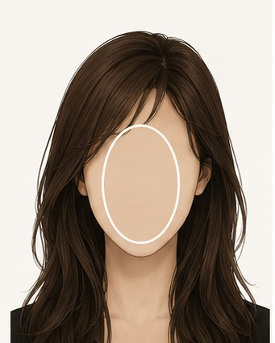
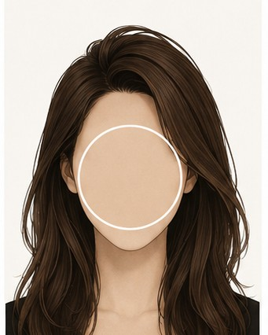
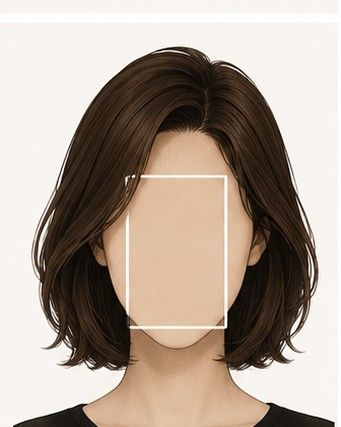
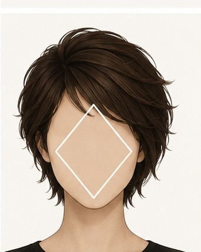
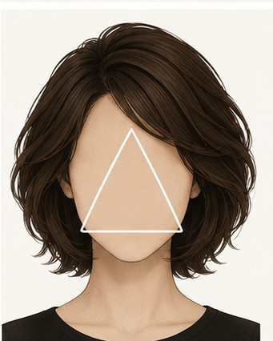

Hairstyle Guide by Face Shape얼굴형별 헤어스타일 가이드顔型別ヘアスタイルガイド脸型对应发型指南臉型對應髮型指南
Find cuts that flatter your measured face shape. A guide, not a rule — your features come first.측정된 내 얼굴형에 어울리는 스타일을 찾아보세요. 정답이 아닌 참고용 가이드입니다.測定された顔型に似合うスタイルを見つけましょう。あくまで参考ガイドです。为您测得的脸型找到合适的发型。仅供参考，并非定式。為您測得的臉型找到合適的髮型。僅供參考，並非定式。
Oval계란형卵型鹅蛋脸鵝蛋臉OvalOvalOvalOval
The balanced "ideal" — forehead and jaw in harmony, length slightly greater than width. Almost any style works, so it's the perfect shape to experiment with.이마와 턱의 균형이 좋고 세로가 가로보다 살짝 긴 이상적인 비율. 어떤 스타일이든 잘 어울려서 마음껏 시도해보기 좋은 얼굴형이에요.額と顎のバランスがよく、縦が横よりやや長い理想的な比率。どんなスタイルも似合うので、自由に試せる顔型です。额头与下巴比例匀称，纵向略长于横向，是公认的理想脸型。几乎适合任何发型，最适合大胆尝试。額頭與下巴比例勻稱，縱向略長於橫向，是公認的理想臉型。幾乎適合任何髮型，最適合大膽嘗試。
✓ Flattering추천 스타일おすすめ推荐推薦
Most styles work well — layers, bob, long hair, or updos all suit you.레이어드, 단발, 롱, 업스타일까지 거의 모든 스타일이 잘 어울려요.レイヤー・ボブ・ロング・アップまでほぼ何でも似合います。层次、波波头、长发、盘发几乎都很合适。層次、鮑伯頭、長髮、盤髮幾乎都很合適。
Side-swept bangs add a soft, flattering accent.사이드뱅(옆으로 흐르는 앞머리)으로 부드러운 포인트를 더해보세요.サイドに流す前髪で柔らかなアクセントを。侧分刘海增添柔和点缀。側分瀏海增添柔和點綴。
Long layers keep the natural flow of your balanced features.롱 레이어드로 균형 잡힌 얼굴선의 자연스러운 흐름을 살려요.ロングレイヤーで整った輪郭の自然な流れを活かす。长层次顺应匀称轮廓的自然线条。長層次順應勻稱輪廓的自然線條。
✕ Go easy on주의할 점注意需注意需注意
Very heavy, face-covering full bangs can hide your balanced proportions — optional, not a must.얼굴을 완전히 덮는 무거운 풀뱅은 균형 잡힌 비율을 가릴 수 있어요. (선택사항)顔を覆う重めのフルバングは整った比率を隠すことも。（お好みで）过于厚重、遮住脸的齐刘海可能掩盖匀称比例（视喜好而定）。過於厚重、遮住臉的齊瀏海可能掩蓋勻稱比例（視喜好而定）。

img/hair-oval.jpg
Round둥근형丸顔圆脸圓臉RoundRoundRoundRound
Width and length are similar with soft, curved lines — a youthful look. The goal is to add vertical length and slim the sides.가로와 세로 길이가 비슷하고 곡선이 부드러워 동안 인상. 세로 길이감을 더하고 양옆을 갸름하게 보이는 게 핵심이에요.横と縦の長さが近く、輪郭が柔らかで若々しい印象。縦のラインを足し、横をすっきり見せるのがポイント。横纵长度接近、线条柔和，显得年轻。重点是拉长纵向、修饰两侧。橫縱長度接近、線條柔和，顯得年輕。重點是拉長縱向、修飾兩側。
✓ Flattering추천 스타일おすすめ推荐推薦
Long layers add vertical length and slim the face.긴 레이어드로 세로 길이감을 더해 갸름하게 보여요.ロングレイヤーで縦のラインを強調してすっきりと。长层次增添纵向感、显瘦。長層次增添縱向感、顯瘦。
A side part breaks the symmetry and lengthens the look.사이드 파트(옆가르마)로 비대칭을 만들면 얼굴이 길어 보여요.サイドパート（斜め分け）で非対称にすると顔が長く見えます。侧分（偏分）打破对称，让脸显长。側分（偏分）打破對稱，讓臉顯長。
Volume at the crown adds height and elongates the face.정수리 볼륨으로 높이를 더해 세로 길이감을 살려요.トップのボリュームで高さを出し、縦長効果を。头顶蓬松增加高度、拉长脸型。頭頂蓬鬆增加高度、拉長臉型。
✕ Go easy on주의할 점注意需注意需注意
Blunt chin-length bobs that stop right at the widest point — they round the face further.얼굴이 가장 넓은 턱선에서 끝나는 짧은 일자 단발 — 더 동그래 보일 수 있어요.一番広い顎ラインで切りそろえた短いワンレンボブは丸さを強調。在最宽下巴线齐切的短直波波头，会让脸更圆。在最寬下巴線齊切的短直鮑伯頭，會讓臉更圓。
Volume added at the sides (horizontal width).양옆에 볼륨을 주는 스타일(가로로 넓어 보임).サイドにボリュームを出すスタイル（横広に見える）。两侧蓬松的造型（显横宽）。兩側蓬鬆的造型（顯橫寬）。

img/hair-round.jpg
Square각진형四角顔方脸方臉SquareSquareSquareSquare
Forehead, cheeks, and jaw are similar in width with a strong, angular jawline — a bold, defined look. The goal is to soften the corners.이마·광대·턱 너비가 비슷하고 턱선이 또렷하게 각져 강하고 또렷한 인상. 각진 부분을 부드럽게 풀어주는 게 핵심이에요.額・頬・顎の幅が近く、エラがはっきりした力強い印象。角を柔らかく見せるのがポイント。额头、颧骨与下颌宽度相近，下颌线分明，轮廓硬朗。重点是柔化棱角。額頭、顴骨與下顎寬度相近，下顎線分明，輪廓硬朗。重點是柔化稜角。
✓ Flattering추천 스타일おすすめ推荐推薦
Soft layers around the face that break up the angles.얼굴을 감싸는 부드러운 레이어로 각진 라인을 풀어주세요.顔まわりの柔らかいレイヤーで角をなじませる。用修饰脸庞的柔和层次淡化棱角。用修飾臉龐的柔和層次淡化稜角。
Side-swept bangs to soften a strong brow and jaw.사이드뱅(옆으로 흐르는 앞머리)으로 강한 인상을 완화해요.サイドに流す前髪で強い印象を和らげる。侧分刘海柔化硬朗的眉骨与下颌。側分瀏海柔化硬朗的眉骨與下顎。
Textured waves that round out the silhouette.텍스처 웨이브로 실루엣을 둥글게 만들어보세요.動きのあるウェーブで輪郭を丸く。用纹理感卷发让轮廓更圆润。用紋理感捲髮讓輪廓更圓潤。
✕ Go easy on주의할 점注意需注意需注意
Blunt cuts that stop at the jaw — they emphasize the angles.턱선에서 똑 떨어지는 일자 컷 — 각진 라인을 강조해요.エラの位置で切りそろえたワンレンは角を強調。在下颌齐切的直发会强调棱角。在下顎齊切的直髮會強調稜角。
A longer face with an angular jawline and fairly even width throughout — like a square, but longer. Soften the angles and visually shorten the length.각진 턱선에 세로로도 긴 형. 각진형이 길어진 느낌이에요. 각을 풀고 길이감을 줄여주는 게 좋아요.エラが角ばり、縦にも長い顔型。四角顔が長くなったイメージ。角を和らげ、縦の長さを抑えるのがポイント。下颌硬朗且脸偏长，像拉长的方脸。重点是柔化棱角、缩短纵向感。下顎硬朗且臉偏長，像拉長的方臉。重點是柔化稜角、縮短縱向感。
✓ Flattering추천 스타일おすすめ推荐推薦
Soft waves and curls that add width and round the face.가로 볼륨을 더하는 부드러운 웨이브와 컬.横幅を出す柔らかなウェーブとカール。增添横向感的柔和卷发。增添橫向感的柔和捲髮。
Side-parted bangs to break up the vertical length.사이드 파트 앞머리로 세로 길이를 끊어주세요.サイドパートの前髪で縦の長さをカット。侧分刘海打断纵向长度。側分瀏海打斷縱向長度。
A chin-length bob keeps the focus from dropping downward.턱선 단발로 시선이 아래로 처지지 않게 해요.顎ラインのボブで視線を下げすぎない。下巴长度的波波头避免视线下移。下巴長度的鮑伯頭避免視線下移。
✕ Go easy on주의할 점注意需注意需注意
Long, straight hair with no bangs — it lengthens the face further.앞머리 없는 긴 생머리 — 얼굴이 더 길어 보여요.前髪なしの長いストレートは顔をさらに長く見せる。无刘海的长直发会让脸更长。無瀏海的長直髮會讓臉更長。

img/hair-rectangle.jpg
Oblong긴형面長长脸長臉OblongOblongOblongOblong
Noticeably longer than it is wide, with fairly uniform width — elegant, but it reads long. Add width and shorten the vertical line.세로 길이가 길고 폭이 일정한 형. 우아하지만 길어 보이기 쉬워요. 가로감을 더하고 세로를 줄이는 게 핵심이에요.横より縦が長く、幅が均一な顔型。上品ですが長く見えがち。横幅を足し、縦を抑えるのがポイント。纵向明显长于横向、宽度均匀，优雅但显长。重点是增加横向感、缩短纵向。縱向明顯長於橫向、寬度均勻，優雅但顯長。重點是增加橫向感、縮短縱向。
✓ Flattering추천 스타일おすすめ推荐推薦
Bangs (see-through or full) to shorten the face instantly.앞머리(시스루뱅·풀뱅)로 얼굴을 짧아 보이게 해요.前髪（シースルーバング・full bang）で顔を短く見せる。刘海（空气感或齐刘海）瞬间缩短脸长。瀏海（空氣感或齊瀏海）瞬間縮短臉長。
Layered mid-length cuts that add body at the sides.양옆에 볼륨을 주는 레이어드 미디엄 길이.サイドにボリュームを出すレイヤーミディアム。在两侧增加蓬松度的中长层次。在兩側增加蓬鬆度的中長層次。
Volume at the sides rather than the crown.정수리보다 양옆에 볼륨을 주세요.トップより両サイドにボリュームを。把蓬松感放在两侧而非头顶。把蓬鬆感放在兩側而非頭頂。
✕ Go easy on주의할 점注意需注意需注意
Long hair with a center part and no bangs, or extra crown volume.앞머리 없는 센터파트 긴 머리, 정수리 볼륨.前髪なしのセンターパートロングや、トップの高さ。无刘海的中分长发，或头顶过高的蓬松。無瀏海的中分長髮，或頭頂過高的蓬鬆。
Prominent cheekbones with a narrower forehead and jaw — a striking, angular look. The goal is to add width at the forehead and chin and ease the cheekbones.광대가 가장 넓고 이마와 턱이 좁아 또렷한 인상. 이마와 턱에 볼륨을 더하고 광대를 부드럽게 보이는 게 핵심이에요.頬骨が最も広く、額と顎が狭いシャープな印象。額と顎に幅を出し、頬骨を和らげるのがポイント。颧骨最宽、额头与下巴较窄，轮廓鲜明。重点是为额头和下巴增加宽度、柔化颧骨。顴骨最寬、額頭與下巴較窄，輪廓鮮明。重點是為額頭和下巴增加寬度、柔化顴骨。
✓ Flattering추천 스타일おすすめ推荐推薦
Side-swept bangs to add softness and width at the forehead.사이드뱅으로 이마 쪽에 부드러운 폭을 더해요.サイドに流す前髪で額に柔らかな幅を。侧分刘海为额头增添柔和宽度。側分瀏海為額頭增添柔和寬度。
Chin-length layers that fill out the narrow jaw.턱선 레이어로 좁은 턱을 채워주세요.顎ラインのレイヤーで狭い顎をカバー。下巴长度的层次填补较窄的下颌。下巴長度的層次填補較窄的下顎。
A textured pixie also works, with volume kept off the cheekbones.광대를 피해 볼륨을 준 텍스처 픽시도 잘 어울려요.頬骨を避けてボリュームを置いたショートも◎。避开颧骨加蓬松的纹理短发也很合适。避開顴骨加蓬鬆的紋理短髮也很合適。
✕ Go easy on주의할 점注意需注意需注意
Volume right at the cheekbones, or hair slicked flat back.광대 위치에 볼륨이 몰리는 컷, 매끈하게 넘긴 슬릭백.頬骨にボリュームが集まる髪型や、ぴったり後ろへ流すスタイル。蓬松集中在颧骨的造型，或贴头向后梳。蓬鬆集中在顴骨的造型，或貼頭向後梳。

img/hair-diamond.jpg
Heart하트형ハート型心形脸心形臉HeartHeartHeartHeart
A wide forehead and cheekbones taper to a narrow, pointed chin — a soft, romantic look. Balance by adding fullness around the jaw and easing the wide top.이마와 광대가 넓고 턱이 좁고 뾰족해 부드럽고 로맨틱한 인상. 턱 주변에 볼륨을 더하고 넓은 상부를 완화해 균형을 맞춰요.額と頬骨が広く、顎が細く尖った柔らかな印象。顎まわりにボリュームを足し、広い上部を和らげてバランスを。额头与颧骨较宽、下巴窄而尖，柔美浪漫。重点是在下颌增添丰盈感、柔化偏宽的上半部。額頭與顴骨較寬、下巴窄而尖，柔美浪漫。重點是在下顎增添豐盈感、柔化偏寬的上半部。
✓ Flattering추천 스타일おすすめ推荐推薦
Side-swept bangs to soften and narrow a wide forehead.사이드뱅으로 넓은 이마를 부드럽게 좁혀줘요.サイドに流す前髪で広い額を柔らかくカバー。侧分刘海柔化并收窄偏宽的额头。側分瀏海柔化並收窄偏寬的額頭。
Chin-length layers that add weight near the narrow chin.턱선 레이어로 좁은 턱 주변에 볼륨을 더해요.顎ラインのレイヤーで細い顎まわりにボリュームを。下巴长度的层次为较窄的下巴增添分量。下巴長度的層次為較窄的下巴增添分量。
Long, textured waves that fill out the lower face.롱 텍스처 웨이브로 얼굴 아랫부분을 채워주세요.長めの動きあるウェーブで顔の下半分を補う。长款纹理卷发丰盈下半张脸。長款紋理捲髮豐盈下半張臉。
✕ Go easy on주의할 점注意需注意需注意
Short blunt bangs that highlight the forehead, or extra crown volume.이마를 강조하는 짧은 일자 앞머리, 정수리 볼륨.額を強調する短いぱっつん前髪や、トップの高さ。强调额头的短齐刘海，或头顶过高的蓬松。強調額頭的短齊瀏海，或頭頂過高的蓬鬆。
A wide forehead and strong brow line narrow down to a delicate chin. Balance the top-heavy shape by building volume lower, around the jaw.이마가 넓고 눈썹 라인이 또렷하며 턱으로 갈수록 좁아지는 형. 상부에 무게가 실리니 턱 쪽 하부에 볼륨을 줘 균형을 맞춰요.額が広く眉のラインがはっきりし、顎に向かって細くなる顔型。上に重心があるので、顎まわりにボリュームを足してバランスを。额头宽、眉骨分明，向下颌逐渐收窄。上半部偏重，重点是在下颌附近增加蓬松以求平衡。額頭寬、眉骨分明，向下顎逐漸收窄。上半部偏重，重點是在下顎附近增加蓬鬆以求平衡。
✓ Flattering추천 스타일おすすめ推荐推薦
A chin-length bob that builds weight at the narrow jaw.턱선 단발로 좁은 턱에 무게감을 줘요.顎ラインのボブで細い顎にボリュームを。下巴长度的波波头为较窄下颌增添分量。下巴長度的鮑伯頭為較窄下顎增添分量。
Side-parted waves that downplay the wide forehead.사이드 파트 웨이브로 넓은 이마를 덜 도드라지게 해요.サイドパートのウェーブで広い額を目立たせない。侧分卷发弱化偏宽的额头。側分捲髮弱化偏寬的額頭。
Layers that fall below the chin for fullness lower down.턱 아래로 떨어지는 레이어로 하부에 볼륨을 더해요.顎下に落ちるレイヤーで下半分にボリュームを。落在下巴以下的层次增添下半部丰盈感。落在下巴以下的層次增添下半部豐盈感。
✕ Go easy on주의할 점注意需注意需注意
Volume at the crown or very short cuts that emphasize the wide top.정수리 볼륨, 상부를 강조하는 아주 짧은 컷.トップのボリュームや、上部を強調する極端なショート。头顶蓬松，或强调上半部的过短发型。頭頂蓬鬆，或強調上半部的過短髮型。
A wider jawline narrows toward the forehead — a strong, distinctive jaw (the opposite of an inverted triangle). Add volume up top to balance the wider lower face.턱이 넓고 이마로 갈수록 좁아지는 형. 강하고 개성 있는 턱선이 특징이에요(역삼각의 반대). 상부에 볼륨을 줘 넓은 아랫부분과 균형을 맞춰요.エラが広く、額に向かって細くなる顔型。力強く個性的な顎が特徴（逆三角の逆）。上部にボリュームを出して下半分とバランスを。下颌较宽、向额头收窄，下颌线鲜明有个性（与倒三角相反）。重点是在上半部增加蓬松以平衡偏宽的下半部。下顎較寬、向額頭收窄，下顎線鮮明有個性（與倒三角相反）。重點是在上半部增加蓬鬆以平衡偏寬的下半部。
✓ Flattering추천 스타일おすすめ推荐推薦
Volume at the temples and crown to widen the upper face.관자놀이·정수리 볼륨으로 얼굴 상부를 넓혀줘요.こめかみ・トップのボリュームで上半分に幅を。在太阳穴与头顶增加蓬松，拓宽上半张脸。在太陽穴與頭頂增加蓬鬆，拓寬上半張臉。
Side-swept bangs that draw the eye upward.사이드뱅으로 시선을 위로 끌어올려요.サイドに流す前髪で視線を上へ。侧分刘海把视线向上引导。側分瀏海把視線向上引導。
A layered bob that keeps weight off the jaw.턱에 무게가 쏠리지 않는 레이어드 밥.顎に重さを集めないレイヤードボブ。不把分量集中在下颌的层次波波头。不把分量集中在下顎的層次鮑伯頭。
✕ Go easy on주의할 점注意需注意需注意
Heavy, blunt cuts that add weight right at the jaw.턱선에 무게가 실리는 무거운 일자 단발.顎にボリュームが集まる重めのワンレンボブ。在下颌堆积分量的厚重直发短发。在下顎堆積分量的厚重直髮短髮。

img/hair-triangle.jpg
These suggestions are general guidance, not rules. Hair length, texture, and personal preference all matter — use them as a starting point.위 추천은 일반적인 가이드일 뿐 정답이 아닙니다. 모발 길이·질감·개인 취향에 따라 달라질 수 있으니 참고로만 활용해주세요.上記の提案は一般的なガイドであり、正解ではありません。髪の長さ・質感・好みによって変わります。参考程度にどうぞ。以上建议仅为一般参考，并非定式。发长、发质和个人喜好都会影响效果，请作为起点参考。以上建議僅為一般參考，並非定式。髮長、髮質和個人喜好都會影響效果，請作為起點參考。